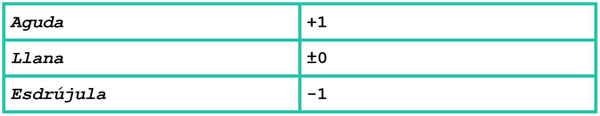

How to Read and Count Syllables in Spanish Poetry
I believe one of the most important elements of enjoying gems of poetry like romances is the ability to understand how they sound and the way their rhythm works. This requires a bit of extra knowledge beyond knowing how to pronounce Spanish. Romances, for example, always have lines of eight syllables, but if you go to count, you’ll often end up with numbers not eight. This article will explain why, and the proper way of counting and reading.
Generally, words in Spanish can be categorized into aguda, llana, and esdrújula depending on where the accent (or stress, in English) falls relative to the end of the word. A llana or palabra llana is a word where the accent falls on the second-to-last syllable. This is the default placement in Spanish. Almost any word that doesn’t have an accent marking (like á or é) is a palabra llana. For example, gato, meaning “cat”, is a palabra llana because it is pronounced GA-to, as opposed to ga-TO. An aguda is a word where the accent falls on the last syllable of the word. An example of this you might be familiar with is café, pronounced ca-FE as opposed to CA-fe. Notice how the accent is included on the ‘e’ to cause this pronunciation. Finally, an esdrújula is a word where the accent falls on the antepenultimate or third-to-last syllable. These kinds of words are the least common, but you might know teléfono (te-LE-fo-no) or número (NU-me-ro). Notice that the word esdrújula is itself an esdrújula.
This categorization is important for understanding the way that syllables are counted in syllable-specific poetic forms. The final word in each line determines the modification to the number of syllables. A line that ends in a llana is unchanged, as this is the default. A line that ends with an aguda is counted as one more that the actual number of syllables. A line that ends with an esdrújula is counted as one less than the actual number of syllables.

Now, this might seem arbitrary and hard to remember. Here’s another way of thinking about it. Say you have a poetic form like the romance where every line must have eight syllables. Since the default stress falls on the penultimate syllable of a word in Spanish, instead of “there must be eight syllables,” you could also say “the seventh syllable must be accented.” This is why agudas and esdrújulas “add” or “subtract” from the syllable count. The point is that the accent always falls in the same place: the seventh syllable, regardless of whether that final word has one, two, or zero syllables after the accent. There will be examples of complete poetic lines at the end, but there’s one more thing to go over first.
Certain occurrences can cause syllables to be pronounced together. Sinalefa is when a word that ends in a vowel precedes a word that begins with a vowel and they combine. For example, a line from En la ciudad Granadina, “Vive allí una dama mora” has two sinalefas right next to each other: “Vive allí” and “allí una.” In poetry, these vowels are pronounced together as one syllable: vi-vea-llíun-a-da-ma-mo-ra. Notice that now we have our appropriate count of eight syllables, instead of ten.
Diptongo is easier to understand, but you still need to watch out for it because it can mess up the number of syllables in a line. In Spanish, not all vowels are created equal, and when a strong vowel (a, e, o) pairs with a weak vowel (u, i) they are generally pronounced together. This also occurs when both weak vowels are together, like in the word ciudad (ciu-dad, not ci-u-dad). This comes up fairly frequently; you might know words like aire or tiempo, which are both two syllables, not three.
There are other things that can alter when vowel sounds are pronounced together or not, but they aren’t as common and are more confusing, so I’m not including them for clarity.
Let’s take a set of lines from the romance “En la ciudad Granadina” and count the syllables.
Diciéndole que el Cegrí
Sirve á otra mora gallarda,
A quien se humilla el amor
Como á su madre sagrada.
In the first line, we have a sinalefa between que and el and a diptongo in the second syllable of diciéndole. Don’t forget, Cegrí, having an accent on the last syllable, is an aguda, meaning we will add one to the final count. The line then looks like this: di+cién+do+le+quel+Ce+grí = 7 + 1 = 8.
In the second line we have a confusing case where sinalefa compacts three syllables into one: “sirve á otra.” The line becomes: sir+veáo+tra+mo+ra+ga+llar+da = 8.
The third line has a sinalefa in “humilla el” and a diptongo in “quien.” The line becomes: a+quien+se+hu+mill+ael+a+mor = 8.
The last line has just one sinalefa: Co+moá+su+ma+dre+sa+gra+da = 8.
As you can see from this example, sinalefas are incredibly common, and though the aguda, llana, and esdrújula rules can be annoying to remember, they often don’t come up because most words are llanas.
I hope this guide allows you to appreciate the beauty of romances and other poetry all the more. Happy reading!